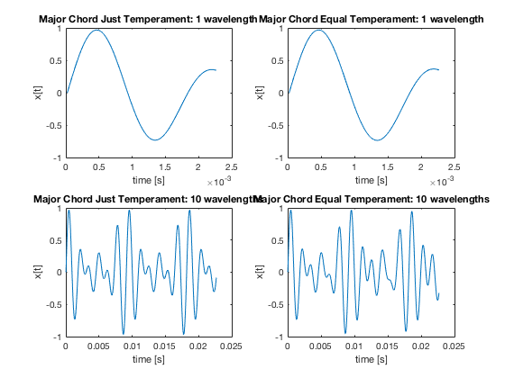
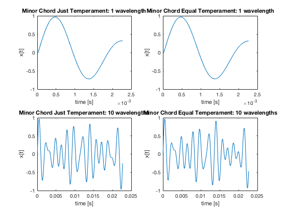

John Tronolone
Music and Engineering Homework 1 Prof. Hoerning February 5, 2019
Contents
Setup and Constants
%%%%%%%%%%%%%%%%%%%%%%%%%%%%%%%%%%%%%%%%%%%%%%%%%%%%%%%%%%%%%%%%%%%%%%%%%%% % Setup %%%%%%%%%%%%%%%%%%%%%%%%%%%%%%%%%%%%%%%%%%%%%%%%%%%%%%%%%%%%%%%%%%%%%%%%%%% close all clear functions clear variables dbstop if error %%%%%%%%%%%%%%%%%%%%%%%%%%%%%%%%%%%%%%%%%%%%%%%%%%%%%%%%%%%%%%%%%%%%%%%%%%% % Constants %%%%%%%%%%%%%%%%%%%%%%%%%%%%%%%%%%%%%%%%%%%%%%%%%%%%%%%%%%%%%%%%%%%%%%%%%%% constants.fs=44100; % Sampling rate in samples per second constants.durationScale=0.5; % Duration of notes in a scale constants.durationChord=3; % Duration of chords
Question 1 - Tables
% (a) % initialize just intonation frequency table just_freq_table = zeros(13, 12); % 13 notes for each key, 12 keys C4 = 264; % Hz just_freq_table(1,1) = C4; % just intonation frequency ratios just_ratios = [1; 16/15; 9/8; 6/5; 5/4; 4/3; 25/18; 3/2; 8/5; 5/3; 7/4; 15/8; 2]; inverse_ratios = 1./just_ratios; % populate C scale frequencies just_freq_table(:,1) = C4 * just_ratios; % populate diagonals, i.e. assign Db4 from C scale to Db scale, etc. n = 13; just_freq_table(1:n+1:end) = just_freq_table(1:12,1); % populate rest of frequency table for ii = 2:12 just_freq_table(:, ii) = just_freq_table(ii,ii)*[flipud(inverse_ratios(2:ii)); just_ratios(1:(13-ii+1))]'; end % (b) % equal temperament frequency ratios equal_ratios = [1; 2^(1/12); 2^(2/12); 2^(3/12); 2^(4/12); 2^(5/12); 2^(6/12); 2^(7/12); 2^(8/12); 2^(9/12); 2^(10/12); 2^(11/12); 2]; equal_freq_table = repmat(C4*equal_ratios, [1 12]);
Question 2 - scales
[soundMajorScaleJust]=create_scale('Major','Just','A4',constants); [soundMajorScaleEqual]=create_scale('Major','Equal','A4',constants); [soundMinorScaleJust]=create_scale('Minor','Just','A4',constants); [soundMinorScaleEqual]=create_scale('Minor','Equal','A4',constants); disp('Playing the Just Tempered Major Scale'); soundsc(soundMajorScaleJust,constants.fs); %pause(9) disp('Playing the Equal Tempered Major Scale'); soundsc(soundMajorScaleEqual,constants.fs); %pause(9) disp('Playing the Just Tempered Minor Scale'); soundsc(soundMinorScaleJust,constants.fs); %pause(9) disp('Playing the Equal Tempered Minor Scale'); soundsc(soundMinorScaleEqual,constants.fs); %pause(9) fprintf('\n'); % EXTRA CREDIT - Melodic and Harmonic scales [soundHarmScaleJust]=create_scale('Harmonic','Just','A4',constants); [soundHarmScaleEqual]=-create_scale('Harmonic','Equal','A4',constants); [soundMelScaleJust]=create_scale('Melodic','Just','A4',constants); [soundMelScaleEqual]=create_scale('Melodic','Equal','A4',constants); disp('Playing the Just Tempered Harmonic Scale'); soundsc(soundHarmScaleJust,constants.fs); %pause(9) disp('Playing the Equal Tempered Harmonic Scale'); soundsc(soundHarmScaleEqual,constants.fs); %pause(9) disp('Playing the Just Tempered Melodic Scale'); soundsc(soundMelScaleJust,constants.fs); %pause(9) disp('Playing the Equal Tempered Melodic Scale'); soundsc(soundMelScaleEqual,constants.fs); %pause(9) fprintf('\n');
Playing the Just Tempered Major Scale Playing the Equal Tempered Major Scale Playing the Just Tempered Minor Scale Playing the Equal Tempered Minor Scale Playing the Just Tempered Harmonic Scale Playing the Equal Tempered Harmonic Scale Playing the Just Tempered Melodic Scale Playing the Equal Tempered Melodic Scale
Question 3 - chords
fund = 'A4'; % need this to determine wavelength for plots chord_pause = 2; % seconds % major and minor chords [soundMajorChordJust]=create_chord('Major','Just',fund,constants); [soundMajorChordEqual]=create_chord('Major','Equal',fund,constants); [soundMinorChordJust]=create_chord('Minor','Just',fund,constants); [soundMinorChordEqual]=create_chord('Minor','Equal',fund,constants); disp('Playing the Just Tempered Major Chord'); soundsc(soundMajorChordJust,constants.fs); %pause(chord_pause) disp('Playing the Equal Tempered Major Chord'); soundsc(soundMajorChordEqual,constants.fs); %pause(chord_pause) disp('Playing the Just Tempered Minor Chord'); soundsc(soundMinorChordJust,constants.fs); %pause(chord_pause) disp('Playing the Equal Tempered Minor Chord'); soundsc(soundMinorChordEqual,constants.fs); %pause(chord_pause) fprintf('\n'); % assorted other chords [soundPowerChordJust]=create_chord('Power','Just',fund,constants); [soundPowerChordEqual]=create_chord('Power','Equal',fund,constants); [soundSus2ChordJust]=create_chord('Sus2','Just',fund,constants); [soundSus2ChordEqual]=create_chord('Sus2','Equal',fund,constants); [soundSus4ChordJust]=create_chord('Sus4','Just',fund,constants); [soundSus4ChordEqual]=create_chord('Sus4','Equal',fund,constants); [soundDom7ChordJust]=create_chord('Dom7','Just',fund,constants); [soundDom7ChordEqual]=create_chord('Dom7','Equal',fund,constants); [soundMin7ChordJust]=create_chord('Min7','Just',fund,constants); [soundMin7ChordEqual]=create_chord('Min7','Equal',fund,constants); disp('Playing the Just Tempered Power Chord'); soundsc(soundPowerChordJust,constants.fs); %pause(chord_pause) disp('Playing the Equal Tempered Power Chord'); soundsc(soundPowerChordEqual,constants.fs); %pause(chord_pause) disp('Playing the Just Tempered Sus2 Chord'); soundsc(soundSus2ChordJust,constants.fs); %pause(chord_pause) disp('Playing the Equal Tempered Sus2 Chord'); soundsc(soundSus2ChordEqual,constants.fs); %pause(chord_pause) disp('Playing the Just Tempered Sus4 Chord'); soundsc(soundSus2ChordJust,constants.fs); %pause(chord_pause) disp('Playing the Equal Tempered Sus4 Chord'); soundsc(soundSus2ChordEqual,constants.fs); %pause(chord_pause) disp('Playing the Just Tempered Dom7 Chord'); soundsc(soundDom7ChordJust,constants.fs); %pause(chord_pause) disp('Playing the Equal Tempered Dom7 Chord'); soundsc(soundDom7ChordEqual,constants.fs); %pause(chord_pause) disp('Playing the Just Tempered Min7 Chord'); soundsc(soundMin7ChordJust,constants.fs); %pause(chord_pause) disp('Playing the Equal Tempered Min7 Chord'); soundsc(soundMin7ChordEqual,constants.fs); %pause(chord_pause) fprintf('\n');
Playing the Just Tempered Major Chord Playing the Equal Tempered Major Chord Playing the Just Tempered Minor Chord Playing the Equal Tempered Minor Chord Playing the Just Tempered Power Chord Playing the Equal Tempered Power Chord Playing the Just Tempered Sus2 Chord Playing the Equal Tempered Sus2 Chord Playing the Just Tempered Sus4 Chord Playing the Equal Tempered Sus4 Chord Playing the Just Tempered Dom7 Chord Playing the Equal Tempered Dom7 Chord Playing the Just Tempered Min7 Chord Playing the Equal Tempered Min7 Chord
Question 4 - plots
% determine fundamental frequency A4 = 440 Hz seconds = 1/440; one_wavelength_samples = floor(constants.fs*seconds); figure(1) subplot(2,2,1) plot((1:one_wavelength_samples)/constants.fs,soundMajorChordJust(1:one_wavelength_samples)); title('Major Chord Just Temperament: 1 wavelength') xlabel('time [s]') ylabel('x[t]') subplot(2,2,2) plot((1:one_wavelength_samples)/constants.fs,soundMajorChordEqual(1:one_wavelength_samples)); title('Major Chord Equal Temperament: 1 wavelength') xlabel('time [s]') ylabel('x[t]') subplot(2,2,3) plot((1:10*one_wavelength_samples)/constants.fs,soundMajorChordJust(1:10*one_wavelength_samples)); title('Major Chord Just Temperament: 10 wavelengths') xlabel('time [s]') ylabel('x[t]') subplot(2,2,4) plot((1:10*one_wavelength_samples)/constants.fs,soundMajorChordEqual(1:10*one_wavelength_samples)); title('Major Chord Equal Temperament: 10 wavelengths') xlabel('time [s]') ylabel('x[t]') figure(2) subplot(2,2,1) plot((1:one_wavelength_samples)/constants.fs,soundMinorChordJust(1:one_wavelength_samples)); title('Minor Chord Just Temperament: 1 wavelength') xlabel('time [s]') ylabel('x[t]') subplot(2,2,2) plot((1:one_wavelength_samples)/constants.fs,soundMinorChordEqual(1:one_wavelength_samples)); title('Minor Chord Equal Temperament: 1 wavelength') xlabel('time [s]') ylabel('x[t]') subplot(2,2,3) plot((1:10*one_wavelength_samples)/constants.fs,soundMinorChordJust(1:10*one_wavelength_samples)); title('Minor Chord Just Temperament: 10 wavelengths') xlabel('time [s]') ylabel('x[t]') subplot(2,2,4) plot((1:10*one_wavelength_samples)/constants.fs,soundMinorChordEqual(1:10*one_wavelength_samples)); title('Minor Chord Equal Temperament: 10 wavelengths') xlabel('time [s]') ylabel('x[t]') % (d.) I cannot see a difference in the single wavelength plots, but the % tens of wavelengths plots show a difference in waveform for both the % major and minor comparisons 
Question 5 - discussion
% (a.) I cannot hear any difference between the just and equal tempered % major scales. I believe this is because the frequencies are so close that % the small difference in frequency that I cannot hear. However, when I % play the scales simultaneously by calling soundsc without a pause, the % beats that occur on particular notes reveal that there are differences in % frequency. % (b.) I cannot tell which sounds better, but I would guess that the just % tempered scale would sound better since it is based on integer ratios % (c.) Likewise, I cannot hear any difference between the just and equal % tempered minor scales. Again, the difference is audible when calling % soundsc without a pause % (d.) Also cannot tell which sounds better, but again I would guess that % the just tempered scale would sound better. % (e.) The just tempered major chord does not have such pronounced beats as % the equal tempered major chord does when played. % (f.) The just tempered major chord sounds better due to less pronounced % beat frequencies. % (g.) I cannot hear any difference between the just and equal tempered % major chords. % (h.) My headphones are at school, I feel like I would have been able to % tell the difference between the just and equal tempered scales and chords % if I could hear it through something other than laptop speakers.